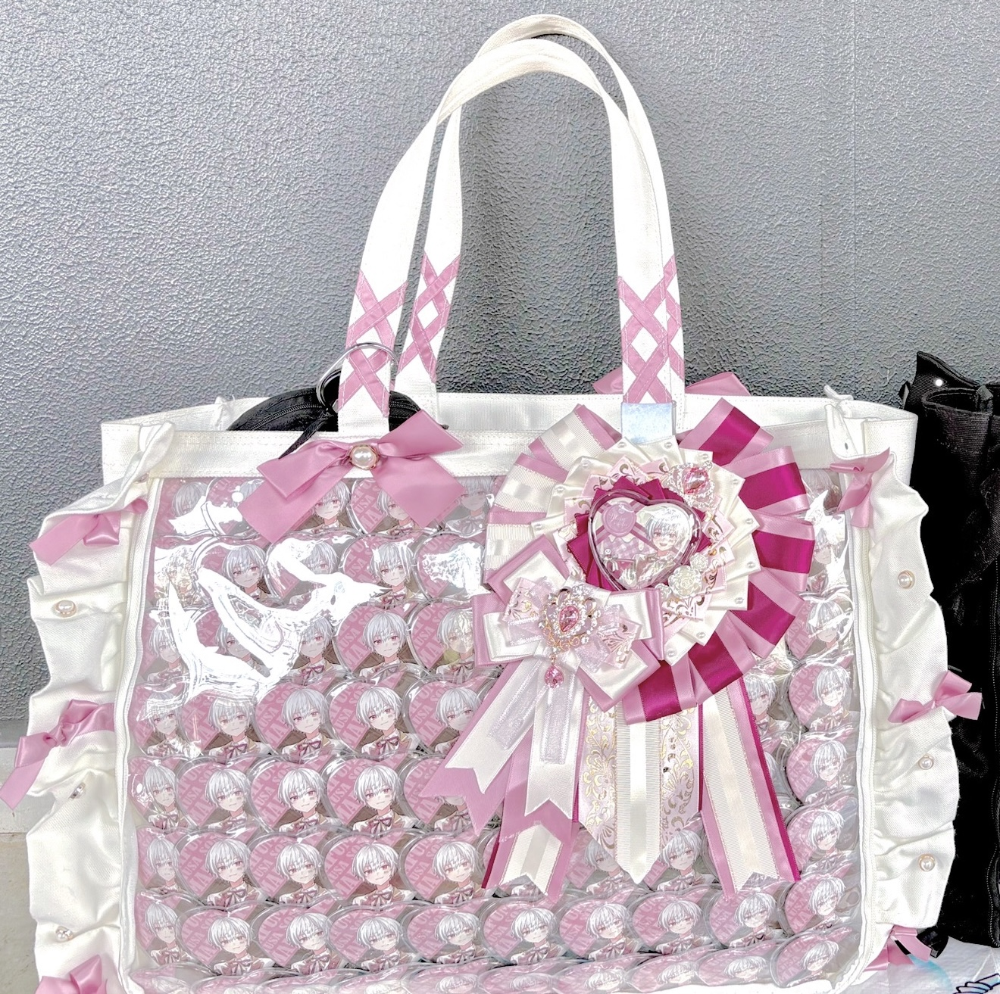
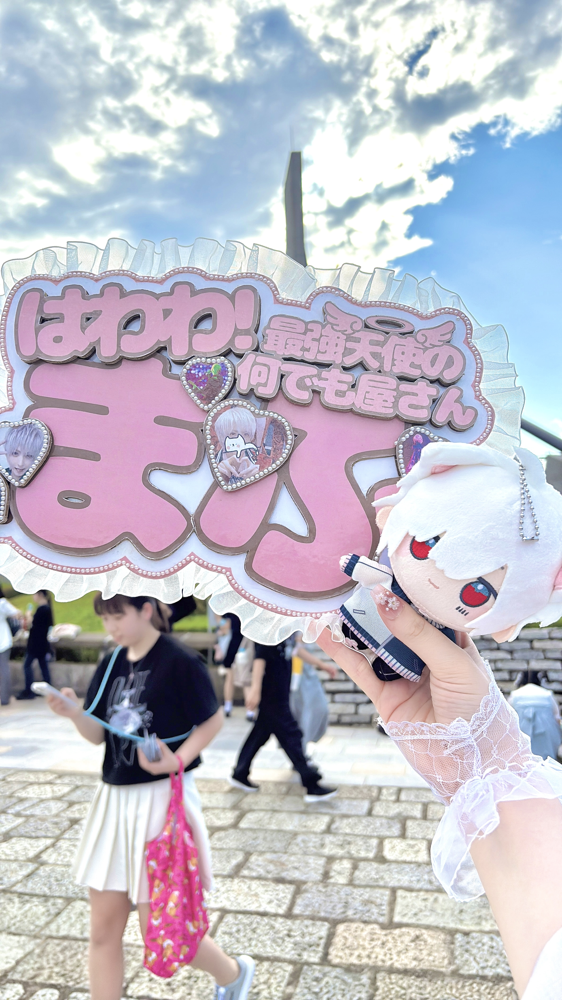
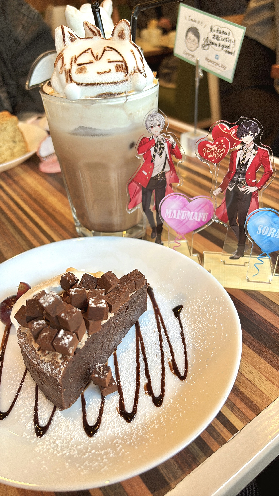
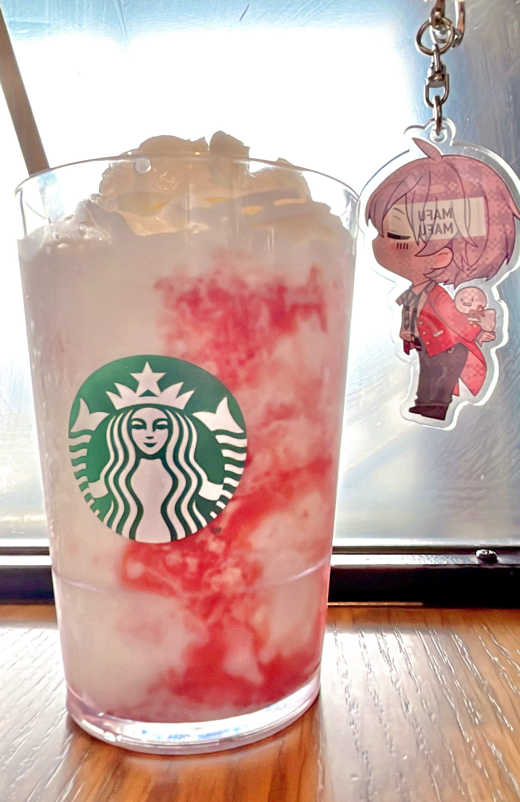
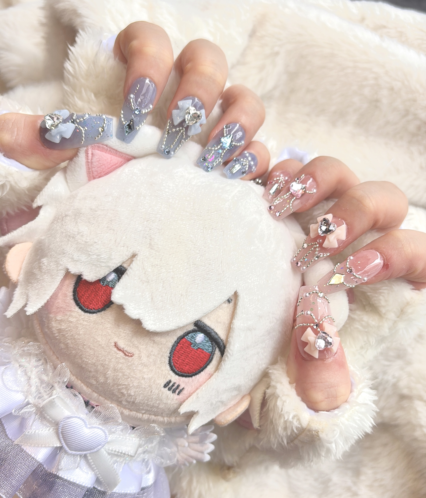

TOPに戻る
推し活Tips・番外編
痛バの組み方から写真の撮り方まで！推し活がもっと楽しくなるハウツー解説（順次公開予定動画👀）

初心者さん必見！痛バッグの綺麗な組み方
百均で買えるランチョンマットを使ったA3・A4痛バの組み方を解説！紙ver.や針を刺さない方法も紹介します👀✨

痛ロゼットの作り方！
缶バッジを100倍可愛く飾れるロゼット！必要な材料やリボンの折り方、パーツの付け方まで徹底解説します！

現場で使える推しネームボードの作り方！
会場外の写真撮影やアピールにぴったり！レースフリルやパールを使った可愛いネームボードの作り方をご紹介。




グッズを使ったおすすめの撮り方紹介！
現場での記念撮影、モニター前、カフェやアフタヌーンティーでのアクスタ・ぬいの可愛い撮り方をピックアップしました！